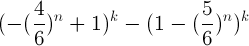
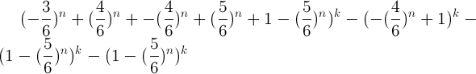
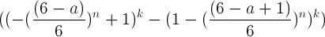
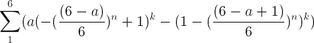

Problem
Statement: 6 Dices
tossed 6 times, and each time (or each set) a minimum is noted. What is
expectation of maximum of these 6 minimum values.
 Let's say I get for first set 1, 4, 6, 2, 3, 2 whose minimum is 1. This
is repeated 6 times and let's say the set of minimums is {1,1,2,3,5,4}
so maximum of this set is 5. I want to calculate the expectation of
this maximum value.
Let's say I get for first set 1, 4, 6, 2, 3, 2 whose minimum is 1. This
is repeated 6 times and let's say the set of minimums is {1,1,2,3,5,4}
so maximum of this set is 5. I want to calculate the expectation of
this maximum value.
It's a lot to take, but if we break down this puzzle, it's really
simple. I will work out a generic solution for n dices tossed k times.
Coin tossing puzzles are too simple sometimes, so I tried to make a
puzzle with dices. Good thing with a simple puzzle is you can add more
attributes to it to make it more complex, or a bit interesting.
Let's say I have 6 dices and I toss them once. I want to find the
expectation of MINIMUM Value. This simply suggests that I need the
following probabilities
1 x P(X=1) + 2 x P(X=2) + ..... 6 x P(X=6)
X = 1 can only be obtained if in all 6 dices I get at least one of the
tosses to be 1. The hard path is to list out all combinations and
that's where I look for the opposite path. P(X>1) is simply 5/6, and
so if in all tosses I get P(X>1) = (5/6)^6. so P(X=1) is simply 1 -
(5/6)^6.
This was easy, now it's a bit complicated for X = 2
If I proceed in a similar fashion I can get P(X > 2) = 1 -
(4/6)^6, but this includes the probability of P(X=1), so a simple
modification is
P(X=2) = 1 - P(X>2) - P(X=1)
And so I have a simple pattern resulting in
 P(X=1) P(X=1) |
0.6651
|
P(X=2)
|
0.2471
|
P(X=3)
|
0.0721
|
P(X=4)
|
0.01425
|
P(X=5)
|
0.00135
|
P(X=6)
|
0.000021
|
At this point expectation calculation is simple, but here I add another
attribute to the puzzle. I want 6 tosses of the 6 dices.
In each set
I will take the minimum value as in the previous part. I will then take
the maximum of these 6 minimum values. Now what is the expectation of
this maximum value?
So another
layer is added, and this can be continued for many times, but let's
think of the second layer as of now.
P(X=1) will simply be getting a 1 in all the minimums otherwise it
won't get selected so it's easiest = 0.665102^6 = 0.0865.
P(X=2) is not so simple, and can't be calculated by P(X>2) logic,
since it's a maximum I use P(X<=2) and this time I use the
probabilities calculated previously.
P(X<=2) = SUM(P(X=1) + P(X=2))^6
Again this includes the case of P(X=1), so I subtract NOT 0.6651, but
0.0865 (calculated above)
so P(X=2) (in this max case) becomes 0.48962
Similarly P(X=3) becomes SUM(P(X=1) + P(X=2) +
P(X=3)^6 - 0.48962 - 0.0865
and we again have the following table
| P(X=1) |
0.0865
|
P(X=2)
|
0.4896
|
P(X=3)
|
0.3336
|
P(X=4)
|
0.0819
|
P(X=5)
|
0.00807
|
P(X=6)
|
0.00012
|
From these values if I
calculate the expectation I get approx 2.435. This can be verified by
doing a simple spreadsheet experiment. Use RANDBETWEEN function to
generate random numbers between 1 and 6. Note down minimum for 6 sets.
Calculate maximum. Repeat this calculation for another set, and do
let's say 1000 sets. Sum/1000 => Approx 2.43. So our reasoning was
right, and we solved a puzzle by using normal kiddish arguments :)
Opposite of this might be first taking the MAX, and then taking the MIN
value.
The refined Problem statement was
6 Dices tossed 6 times, and each time a minimum is noted. What is
expectation of maximum of these 6 minimum values.
From a mathematical point of view it's fun to work this out. Let's try!
Now to be more generic n dices tossed k times, and each time a minimum
is noted. What is the expectation of maximum of these k tosses.
P(X>1) = (5/6)^(n)
P(X>2) = (4/6)^(n) and so on.....
P(X=1) = 1 - (5/6)^n
P(X=2) = 1 - (4/6)^n - (P(X=1))
=
1
-
(4/6)^n - 1 + (5/6)^n
= - (4/6)^n +
(5/6)^n
That's a nice pattern
P(X=3) = 1 - (3/6)^n - (P(X=2)) - P(X=1))
=
1 - (3/6)^n + (4/6)^n - (5/6)^n - 1 + (5/6)^n
= - (3/6)^n + (4/6)^n
so the pattern is...
P(X=4) = - (2/6)^n + (3/6)^n
P(X=a) = - ((6-a)/6)^n + ((6-a+1)/6)^n
Now again moving to k times tossing for maximum
value we have...
P(X=1) = (1-(5/6)^n)^k
P(X=2) = (- (4/6)^n + (5/6)^n + 1
-
(5/6)^n
)^
k - (1-(5/6)^n)^k
=

P(X=3) =

Simplifying
= ( - (3/6)^n
+1)^k
-
(1 - (4/6)^n)^k
Let's verify for n = 6 and k = 6
It's 0.3336 hence a perfect match!
So pattern is

So expectation is

Which if calculated gives 2.43 for n=k=6, and hence a generic solution!